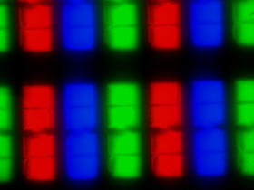
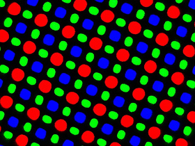
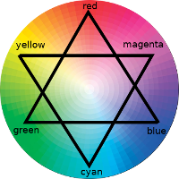
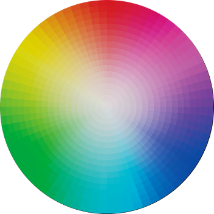

Синтез цвета
RGB означает Red - Green - Blue (красный, зеленый, синий). Это физическая модель синтеза (аддитивный или сложение), то есть имеет воплощение в реальном мире. Так работают все светоизлучающие приборы (телевизоры, проекторы, компьютерные мониторы, экраны мобильных телефонов и планшетов).


Так выглядят при большом увеличении экраны, основанные на двух основных на данный момент типах матриц: LCD и OLED.
HSL означает Hue - Saturation - Lightness (оттенок, насыщенность, яркость). Не существует изображений, использующих эту цветовую модель, но это довольно удобный и понятный способ выбора цвета, например для рисования, для веб-дизайна и т.д. Например, стандартное окно из простейшего графического редактора Paint операционной системы Windows.
Цветовой круг иногда рисуют с одинаковой насыщенностью и в центре и по краям, иногда - по краям будут яркие оттенки, а чем ближе к центру, тем бледнее (в данном случае так и сделано). В HSL-модели первое значение означает поворот цветового круга на нужный угол. Например 0 градусов - это красный цвет, 30 - пурпурный, 60 - синий, 90 - голубой и т. д. Насыщенность и яркость измеряются в процентах. Обратите внимание, что максимальную насыщенность цвета можно получить, поставив движок яркости на 50%.

И в RGB и в HSL используется понятие цветового круга, но по разному. Для RGB мы смотрим на три базовых цвета. Смешивание их дает еще три цвета: красный + синий = пурпурный, синий + зеленый = голубой, зеленый + красный = желтый. Смотрите на линии, соединяющие цвета. Аддитивный метод подразумевает свечение, если ни одна точка не светится, получаем черный. Если светятся все три точки на максимуме яркости (уровень 255), получаем белый. Если все три базовых цвета одинаковой яркости, но между 0 и 255 - получаем оттенки серого. Попробуйте сами на движках ниже.